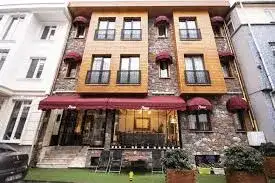

<section id="page-pruva-otel" class="page-section">
  
  <a href="#page-restorasyon" class="btn-page-back" data-key="btn_back">← Geri</a>
  
  <div>
    
    <h2 data-key="restoration_title">Proje Galerisi (Önce & Sonra)</h2>
    
    <h3 class="restoration-subtitle" data-key="restoration_before">Önceki Hali</h3>
    <div class="restoration-gallery detail-gallery" id="restoration-gallery-before">
      </div>
    <div id="restoration-loader-before" style="text-align: center; margin-top: 20px;"></div>
     <div class="house-card" onclick="event.preventDefault(); showPage('page-pruva-otel');" style="cursor: pointer;">
            
            <h3 data-key="restoration_hub_card_1">Pruva Otel</h3>
        </div>
    <h3 class="restoration-subtitle" data-key="restoration_after">Sonraki Hali</h3>
    <div class="restoration-gallery detail-gallery" id="restoration-gallery-after">
      </div>
    <div id="restoration-loader-after" style="text-align: center; margin-top: 20px;"></div>
    
  </div>
</section>